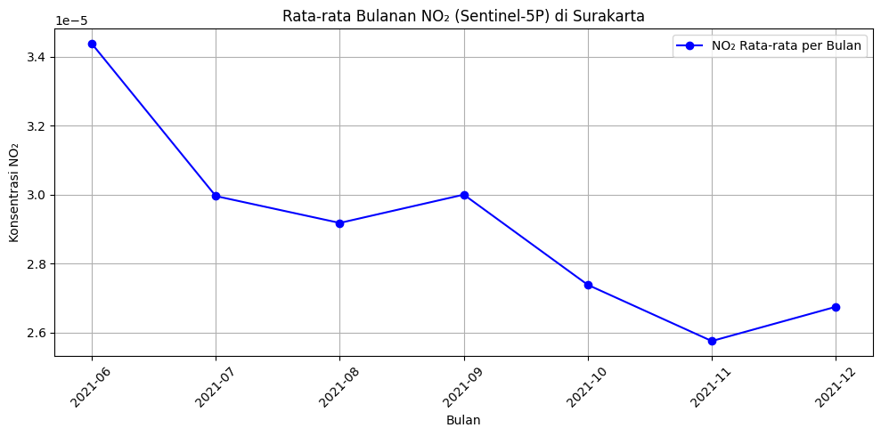
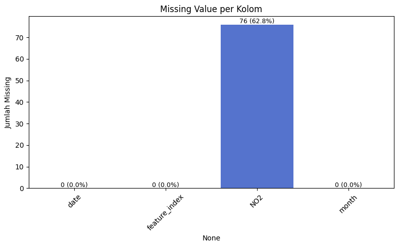
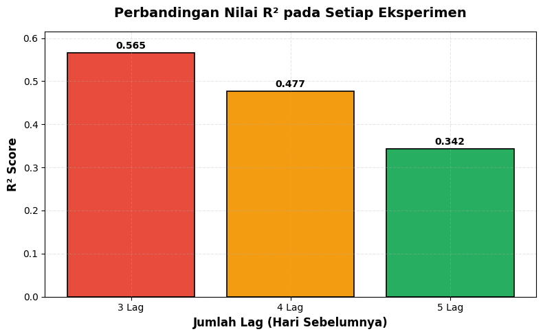
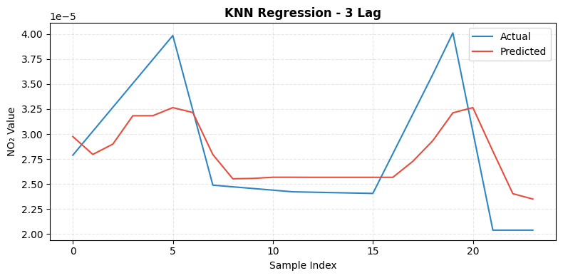
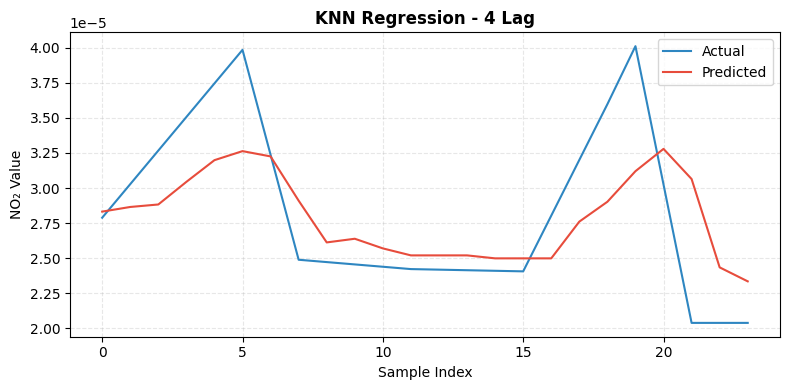
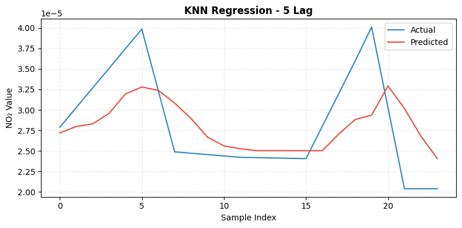

Analisis Prediksi Konsentrasi NO2 Menggunakan KNN Regression#
1. Pengambilan Data (Scraping)#
Data diambil dari sumber Dataspace Coneous yang menyediakan informasi cuaca dan kualitas udara. Scraping dilakukan untuk daerah Surakarta dan mengambil periode 4 bulan penuh, dengan mengambil variabel utama yaitu konsentrasi NO2 per hari.
Data mentah memiliki beberapa kolom, namun untuk keperluan analisis, hanya kolom NO2 dan tanggal (date) yang digunakan.
import openeo
import pandas as pd
import matplotlib.pyplot as plt
# 1. Koneksi ke Copernicus Data Space
connection = openeo.connect("openeo.dataspace.copernicus.eu").authenticate_oidc()
[##################################---] ⌛ Authorization pending---------------------------------------------------------------------------
KeyboardInterrupt Traceback (most recent call last)
/tmp/ipython-input-329860391.py in <cell line: 0>()
4
5 # 1. Koneksi ke Copernicus Data Space
----> 6 connection = openeo.connect("openeo.dataspace.copernicus.eu").authenticate_oidc()
/usr/local/lib/python3.12/dist-packages/openeo/rest/connection.py in authenticate_oidc(self, provider_id, client_id, client_secret, store_refresh_token, use_pkce, display, max_poll_time)
619 client_info=client_info, use_pkce=use_pkce, display=display, max_poll_time=max_poll_time
620 )
--> 621 con = self._authenticate_oidc(
622 authenticator,
623 provider_id=provider_id,
/usr/local/lib/python3.12/dist-packages/openeo/rest/connection.py in _authenticate_oidc(self, authenticator, provider_id, store_refresh_token, fallback_refresh_token_to_store, oidc_auth_renewer)
349 Authenticate through OIDC and set up bearer token (based on OIDC access_token) for further requests.
350 """
--> 351 tokens = authenticator.get_tokens(request_refresh_token=store_refresh_token)
352 _log.info("Obtained tokens: {t}".format(t=[k for k, v in tokens._asdict().items() if v]))
353 if store_refresh_token:
/usr/local/lib/python3.12/dist-packages/openeo/rest/auth/oidc.py in get_tokens(self, request_refresh_token)
912 while elapsed() <= self._max_poll_time:
913 poll_ui.show_progress()
--> 914 time.sleep(sleep)
915
916 if elapsed() >= next_poll:
KeyboardInterrupt:
import os
aoi = {
"type": "Polygon",
"coordinates": [
[
[110.73384843270605, -7.506125504050544],
[110.73384843270605, -7.629910709610229],
[110.93095130302544, -7.629910709610229],
[110.93095130302544, -7.506125504050544],
[110.73384843270605, -7.506125504050544]
]
],
}
s5p = connection.load_collection(
"SENTINEL_5P_L2",
spatial_extent = {
"west": 110.73384843270605,
"south": -7.629910709610229,
"east": 110.93095130302544,
"north": -7.506125504050544
},
temporal_extent=["2025-01-01", "2025-05-01"],
bands=["NO2"],
)
def mask_invalid(x):
return x < 0
s5p_masked = s5p.mask(s5p.apply(mask_invalid))
daily_mean = s5p_masked.aggregate_temporal_period(period="day", reducer="mean")
daily_mean_aoi = daily_mean.aggregate_spatial(geometries=aoi, reducer="mean")
job = daily_mean_aoi.execute_batch(out_format="CSV")
results = job.get_results()
results.download_files("data-copernicus")
for f in os.listdir("data-copernicus"):
if f.endswith(".csv"):
df = pd.read_csv(os.path.join("data-copernicus", f))
print("File ditemukan:", f)
break
df["date"] = pd.to_datetime(df["date"])
df["month"] = df["date"].dt.to_period("M")
df_monthly = df.groupby("month", as_index=False)["NO2"].mean()
df
Requirement already satisfied: openeo in /usr/local/lib/python3.12/dist-packages (0.45.0)
Requirement already satisfied: requests>=2.26.0 in /usr/local/lib/python3.12/dist-packages (from openeo) (2.32.4)
Requirement already satisfied: urllib3>=1.9.0 in /usr/local/lib/python3.12/dist-packages (from openeo) (2.5.0)
Requirement already satisfied: shapely>=1.6.4 in /usr/local/lib/python3.12/dist-packages (from openeo) (2.1.2)
Requirement already satisfied: numpy>=1.17.0 in /usr/local/lib/python3.12/dist-packages (from openeo) (2.0.2)
Requirement already satisfied: xarray<2025.01.2,>=0.12.3 in /usr/local/lib/python3.12/dist-packages (from openeo) (2025.1.1)
Requirement already satisfied: pandas>0.20.0 in /usr/local/lib/python3.12/dist-packages (from openeo) (2.2.2)
Requirement already satisfied: pystac>=1.5.0 in /usr/local/lib/python3.12/dist-packages (from openeo) (1.14.1)
Requirement already satisfied: deprecated>=1.2.12 in /usr/local/lib/python3.12/dist-packages (from openeo) (1.2.18)
Requirement already satisfied: wrapt<2,>=1.10 in /usr/local/lib/python3.12/dist-packages (from deprecated>=1.2.12->openeo) (1.17.3)
Requirement already satisfied: python-dateutil>=2.8.2 in /usr/local/lib/python3.12/dist-packages (from pandas>0.20.0->openeo) (2.9.0.post0)
Requirement already satisfied: pytz>=2020.1 in /usr/local/lib/python3.12/dist-packages (from pandas>0.20.0->openeo) (2025.2)
Requirement already satisfied: tzdata>=2022.7 in /usr/local/lib/python3.12/dist-packages (from pandas>0.20.0->openeo) (2025.2)
Requirement already satisfied: charset_normalizer<4,>=2 in /usr/local/lib/python3.12/dist-packages (from requests>=2.26.0->openeo) (3.4.4)
Requirement already satisfied: idna<4,>=2.5 in /usr/local/lib/python3.12/dist-packages (from requests>=2.26.0->openeo) (3.11)
Requirement already satisfied: certifi>=2017.4.17 in /usr/local/lib/python3.12/dist-packages (from requests>=2.26.0->openeo) (2025.10.5)
Requirement already satisfied: packaging>=23.2 in /usr/local/lib/python3.12/dist-packages (from xarray<2025.01.2,>=0.12.3->openeo) (25.0)
Requirement already satisfied: six>=1.5 in /usr/local/lib/python3.12/dist-packages (from python-dateutil>=2.8.2->pandas>0.20.0->openeo) (1.17.0)
Authenticated using refresh token.
0:00:00 Job 'j-25102307552043458de4cbce5b2f0d05': send 'start'
0:00:13 Job 'j-25102307552043458de4cbce5b2f0d05': created (progress 0%)
0:00:19 Job 'j-25102307552043458de4cbce5b2f0d05': created (progress 0%)
0:00:25 Job 'j-25102307552043458de4cbce5b2f0d05': created (progress 0%)
0:00:34 Job 'j-25102307552043458de4cbce5b2f0d05': created (progress 0%)
0:00:44 Job 'j-25102307552043458de4cbce5b2f0d05': created (progress 0%)
0:00:56 Job 'j-25102307552043458de4cbce5b2f0d05': running (progress N/A)
0:01:12 Job 'j-25102307552043458de4cbce5b2f0d05': running (progress N/A)
0:01:31 Job 'j-25102307552043458de4cbce5b2f0d05': running (progress N/A)
0:01:56 Job 'j-25102307552043458de4cbce5b2f0d05': running (progress N/A)
0:02:26 Job 'j-25102307552043458de4cbce5b2f0d05': running (progress N/A)
0:03:03 Job 'j-25102307552043458de4cbce5b2f0d05': running (progress N/A)
0:03:50 Job 'j-25102307552043458de4cbce5b2f0d05': running (progress N/A)
0:04:49 Job 'j-25102307552043458de4cbce5b2f0d05': finished (progress 100%)
File ditemukan: timeseries.csv
/tmp/ipython-input-3794286045.py:67: UserWarning: Converting to PeriodArray/Index representation will drop timezone information.
df["month"] = df["date"].dt.to_period("M")

import pandas as pd
df = pd.read_csv('surakarta.csv')
df["date"] = pd.to_datetime(df["date"])
df["month"] = df["date"].dt.to_period("M")
df_monthly = df.groupby("month", as_index=False)["NO2"].mean()
df
C:\Users\ARII\AppData\Local\Temp\ipykernel_3028\2757211628.py:7: UserWarning: Converting to PeriodArray/Index representation will drop timezone information.
df["month"] = df["date"].dt.to_period("M")
| date | feature_index | NO2 | month | |
|---|---|---|---|---|
| 0 | 2025-04-02 00:00:00+00:00 | 0 | NaN | 2025-04 |
| 1 | 2025-03-30 00:00:00+00:00 | 0 | NaN | 2025-03 |
| 2 | 2025-04-05 00:00:00+00:00 | 0 | 0.000042 | 2025-04 |
| 3 | 2025-03-29 00:00:00+00:00 | 0 | NaN | 2025-03 |
| 4 | 2025-04-04 00:00:00+00:00 | 0 | 0.000011 | 2025-04 |
| ... | ... | ... | ... | ... |
| 116 | 2025-01-09 00:00:00+00:00 | 0 | 0.000040 | 2025-01 |
| 117 | 2025-01-15 00:00:00+00:00 | 0 | NaN | 2025-01 |
| 118 | 2025-01-11 00:00:00+00:00 | 0 | 0.000020 | 2025-01 |
| 119 | 2025-01-14 00:00:00+00:00 | 0 | NaN | 2025-01 |
| 120 | 2025-01-12 00:00:00+00:00 | 0 | NaN | 2025-01 |
121 rows × 4 columns
Mengecek dataset
print(df.info())
<class 'pandas.core.frame.DataFrame'>
RangeIndex: 121 entries, 0 to 120
Data columns (total 4 columns):
# Column Non-Null Count Dtype
--- ------ -------------- -----
0 date 121 non-null datetime64[ns, UTC]
1 feature_index 121 non-null int64
2 NO2 45 non-null float64
3 month 121 non-null period[M]
dtypes: datetime64[ns, UTC](1), float64(1), int64(1), period[M](1)
memory usage: 3.9 KB
None
print(df.head())
date feature_index NO2 month
0 2025-04-02 00:00:00+00:00 0 NaN 2025-04
1 2025-03-30 00:00:00+00:00 0 NaN 2025-03
2 2025-04-05 00:00:00+00:00 0 0.000042 2025-04
3 2025-03-29 00:00:00+00:00 0 NaN 2025-03
4 2025-04-04 00:00:00+00:00 0 0.000011 2025-04
Mengecek Jumlah Missing Value
df.isnull().sum()
date 0
feature_index 0
NO2 76
month 0
dtype: int64
Visualisasi misisng value
import seaborn as sns
import matplotlib.pyplot as plt
m = df.isnull().sum()
p = m / len(df) * 100
plt.figure(figsize=(8,5))
sns.barplot(x=m.index, y=m.values, color='royalblue')
for i, (x, y) in enumerate(zip(m.index, m.values)):
plt.text(i, y + 0.5, f'{int(y)} ({p[i]:.1f}%)', ha='center', fontsize=9)
plt.title('Missing Value per Kolom')
plt.ylabel('Jumlah Missing')
plt.xticks(rotation=45)
plt.tight_layout()
plt.show()
C:\Users\ARII\AppData\Local\Temp\ipykernel_3028\2610598959.py:11: FutureWarning: Series.__getitem__ treating keys as positions is deprecated. In a future version, integer keys will always be treated as labels (consistent with DataFrame behavior). To access a value by position, use `ser.iloc[pos]`
plt.text(i, y + 0.5, f'{int(y)} ({p[i]:.1f}%)', ha='center', fontsize=9)

3. Preprocessing Data NO2#
a. Menangani Missing Values
Pada dataset yang diunduh, ditemukan beberapa nilai hilang (missing values) di kolom NO2. Untuk menjaga kontinuitas data deret waktu (time series), nilai-nilai hilang diisi menggunakan metode interpolasi linear:
Metode ini memperkirakan nilai di antara dua titik data terdekat, menjaga kestabilan pola data.
print(df['NO2'].isna().sum())
76
df['NO2'] = df['NO2'].interpolate(method='linear')
print(df['NO2'].isna().sum())
df[df['NO2'].isna()]
2
| date | feature_index | NO2 | month | |
|---|---|---|---|---|
| 0 | 2025-04-02 00:00:00+00:00 | 0 | NaN | 2025-04 |
| 1 | 2025-03-30 00:00:00+00:00 | 0 | NaN | 2025-03 |
df['NO2'] = df['NO2'].interpolate(method='linear').bfill()
print(df['NO2'].isna().sum())
0
4. Pembentukan Data Supervised#
Karena data NO2 bersifat deret waktu, maka dibentuk data supervised untuk memprediksi nilai ke depan berdasarkan beberapa nilai sebelumnya.
Tiga eksperimen dilakukan dengan variasi jumlah lag:
Eksperimen 1: Menggunakan 3 lag (NO2-t3, NO2-t2, NO2-t1, NO2)
Eksperimen 2: Menggunakan 4 lag (NO2-t4, NO2-t3, NO2-t2, NO2-t1, NO2)
Eksperimen 3: Menggunakan 5 lag (NO2-t5, NO2-t4, NO2-t3, NO2-t2, NO2-t1, NO2)
Tujuannya adalah untuk melihat pengaruh jumlah lag terhadap performa model.
import pandas as pd
def make_supervised(df, target_col='NO2', n_lags=3):
"""
Membuat dataset supervised learning dengan lag features.
Parameters:
df : DataFrame dengan kolom target (misal 'NO2')
target_col : nama kolom target
n_lags : jumlah lag yang ingin digunakan (misal 3 → t-1, t-2, t-3)
Returns:
DataFrame baru dengan kolom lag + target (tanpa NaN)
"""
df_supervised = df.copy()
# Buat kolom lag
for i in range(1, n_lags + 1):
df_supervised[f'{target_col}_t-{i}'] = df_supervised[target_col].shift(i)
# Urutkan kolom biar rapi (lag dulu, target terakhir)
cols = [f'{target_col}_t-{i}' for i in range(n_lags, 0, -1)] + [target_col]
df_supervised = df_supervised[cols]
# Hapus baris dengan NaN (karena hasil shift)
df_supervised = df_supervised.dropna().reset_index(drop=True)
return df_supervised
# Pastikan df hanya punya kolom NO2
df = df[['NO2']].copy().reset_index(drop=True)
# Eksperimen 1: 3 lag
df_exp1 = make_supervised(df, n_lags=3)
print("Eksperimen 1 (3 lag):")
print(df_exp1.head(), "\n")
# Eksperimen 2: 4 lag
df_exp2 = make_supervised(df, n_lags=4)
print("Eksperimen 2 (4 lag):")
print(df_exp2.head(), "\n")
# Eksperimen 3: 5 lag
df_exp3 = make_supervised(df, n_lags=5)
print("Eksperimen 3 (5 lag):")
print(df_exp3.head(), "\n")
Eksperimen 1 (3 lag):
NO2_t-3 NO2_t-2 NO2_t-1 NO2
0 0.000042 0.000042 0.000042 0.000027
1 0.000042 0.000042 0.000027 0.000011
2 0.000042 0.000027 0.000011 0.000016
3 0.000027 0.000011 0.000016 0.000018
4 0.000011 0.000016 0.000018 0.000020
Eksperimen 2 (4 lag):
NO2_t-4 NO2_t-3 NO2_t-2 NO2_t-1 NO2
0 0.000042 0.000042 0.000042 0.000027 0.000011
1 0.000042 0.000042 0.000027 0.000011 0.000016
2 0.000042 0.000027 0.000011 0.000016 0.000018
3 0.000027 0.000011 0.000016 0.000018 0.000020
4 0.000011 0.000016 0.000018 0.000020 0.000022
Eksperimen 3 (5 lag):
NO2_t-5 NO2_t-4 NO2_t-3 NO2_t-2 NO2_t-1 NO2
0 0.000042 0.000042 0.000042 0.000027 0.000011 0.000016
1 0.000042 0.000042 0.000027 0.000011 0.000016 0.000018
2 0.000042 0.000027 0.000011 0.000016 0.000018 0.000020
3 0.000027 0.000011 0.000016 0.000018 0.000020 0.000022
4 0.000011 0.000016 0.000018 0.000020 0.000022 0.000046
print(len(df_exp1))
print(len(df_exp2))
print(len(df_exp3))
118
117
116
# Simpan ke file CSV
df_exp1.to_csv('supervised_lag1.csv', index=False)
df_exp2.to_csv('supervised_lag2.csv', index=False)
df_exp3.to_csv('supervised_lag3.csv', index=False)
print("Semua dataset supervised sudah disimpan sebagai file CSV.")
Semua dataset supervised sudah disimpan sebagai file CSV.
5. Pembangunan Model KNN Regression#
Untuk setiap eksperimen, digunakan model KNN Regressor dari scikit-learn dengan parameter n_neighbors=3. Model dilatih dengan pembagian data train-test split 80:20 tanpa shuffle karena bersifat time series.
Proses pelatihan dan evaluasi:
import pandas as pd
import matplotlib.pyplot as plt
import numpy as np
from sklearn.model_selection import train_test_split
from sklearn.neighbors import KNeighborsRegressor
from sklearn.metrics import mean_squared_error, r2_score, mean_absolute_error
from sklearn.preprocessing import StandardScaler
Baca file CSV
df_exp1 = pd.read_csv('supervised_lag1.csv')
df_exp2 = pd.read_csv('supervised_lag2.csv')
df_exp3 = pd.read_csv('supervised_lag3.csv')
df_exp1
| NO2_t-3 | NO2_t-2 | NO2_t-1 | NO2 | |
|---|---|---|---|---|
| 0 | 0.000042 | 0.000042 | 0.000042 | 0.000027 |
| 1 | 0.000042 | 0.000042 | 0.000027 | 0.000011 |
| 2 | 0.000042 | 0.000027 | 0.000011 | 0.000016 |
| 3 | 0.000027 | 0.000011 | 0.000016 | 0.000018 |
| 4 | 0.000011 | 0.000016 | 0.000018 | 0.000020 |
| ... | ... | ... | ... | ... |
| 113 | 0.000028 | 0.000032 | 0.000036 | 0.000040 |
| 114 | 0.000032 | 0.000036 | 0.000040 | 0.000030 |
| 115 | 0.000036 | 0.000040 | 0.000030 | 0.000020 |
| 116 | 0.000040 | 0.000030 | 0.000020 | 0.000020 |
| 117 | 0.000030 | 0.000020 | 0.000020 | 0.000020 |
118 rows × 4 columns
df_exp2
| NO2_t-4 | NO2_t-3 | NO2_t-2 | NO2_t-1 | NO2 | |
|---|---|---|---|---|---|
| 0 | 0.000042 | 0.000042 | 0.000042 | 0.000027 | 0.000011 |
| 1 | 0.000042 | 0.000042 | 0.000027 | 0.000011 | 0.000016 |
| 2 | 0.000042 | 0.000027 | 0.000011 | 0.000016 | 0.000018 |
| 3 | 0.000027 | 0.000011 | 0.000016 | 0.000018 | 0.000020 |
| 4 | 0.000011 | 0.000016 | 0.000018 | 0.000020 | 0.000022 |
| ... | ... | ... | ... | ... | ... |
| 112 | 0.000024 | 0.000028 | 0.000032 | 0.000036 | 0.000040 |
| 113 | 0.000028 | 0.000032 | 0.000036 | 0.000040 | 0.000030 |
| 114 | 0.000032 | 0.000036 | 0.000040 | 0.000030 | 0.000020 |
| 115 | 0.000036 | 0.000040 | 0.000030 | 0.000020 | 0.000020 |
| 116 | 0.000040 | 0.000030 | 0.000020 | 0.000020 | 0.000020 |
117 rows × 5 columns
df_exp3
| NO2_t-5 | NO2_t-4 | NO2_t-3 | NO2_t-2 | NO2_t-1 | NO2 | |
|---|---|---|---|---|---|---|
| 0 | 0.000042 | 0.000042 | 0.000042 | 0.000027 | 0.000011 | 0.000016 |
| 1 | 0.000042 | 0.000042 | 0.000027 | 0.000011 | 0.000016 | 0.000018 |
| 2 | 0.000042 | 0.000027 | 0.000011 | 0.000016 | 0.000018 | 0.000020 |
| 3 | 0.000027 | 0.000011 | 0.000016 | 0.000018 | 0.000020 | 0.000022 |
| 4 | 0.000011 | 0.000016 | 0.000018 | 0.000020 | 0.000022 | 0.000046 |
| ... | ... | ... | ... | ... | ... | ... |
| 111 | 0.000024 | 0.000024 | 0.000028 | 0.000032 | 0.000036 | 0.000040 |
| 112 | 0.000024 | 0.000028 | 0.000032 | 0.000036 | 0.000040 | 0.000030 |
| 113 | 0.000028 | 0.000032 | 0.000036 | 0.000040 | 0.000030 | 0.000020 |
| 114 | 0.000032 | 0.000036 | 0.000040 | 0.000030 | 0.000020 | 0.000020 |
| 115 | 0.000036 | 0.000040 | 0.000030 | 0.000020 | 0.000020 | 0.000020 |
116 rows × 6 columns
modeling t3
import pandas as pd
import numpy as np
from sklearn.model_selection import train_test_split
from sklearn.neighbors import KNeighborsRegressor
from sklearn.preprocessing import MinMaxScaler
from sklearn.metrics import mean_squared_error, mean_absolute_error, r2_score, mean_absolute_percentage_error
data_path = 'supervised_lag1.csv'
df = pd.read_csv(data_path)
X = df.drop(columns=['NO2'])
y = df['NO2']
X_train, X_test, y_train, y_test = train_test_split(
X, y, test_size=0.2, shuffle=False
)
scaler = MinMaxScaler()
X_train_scaled = scaler.fit_transform(X_train)
X_test_scaled = scaler.transform(X_test)
# Simpan min-max untuk referensi
min_values = scaler.data_min_
max_values = scaler.data_max_
print("\n📊 Nilai Min-Max fitur:")
for col, minv, maxv in zip(X.columns, min_values, max_values):
print(f"{col:10s} → Min: {minv:.8f} | Max: {maxv:.8f}")
k = 12
knn = KNeighborsRegressor(n_neighbors=k)
knn.fit(X_train_scaled, y_train)
y_pred = knn.predict(X_test_scaled)
rmse = np.sqrt(mean_squared_error(y_test, y_pred))
mae = mean_absolute_error(y_test, y_pred)
mape = mean_absolute_percentage_error(y_test, y_pred) * 100
r2 = r2_score(y_test, y_pred)
print("\n=== HASIL EVALUASI MODEL KNN ===")
print(f"File Data : {data_path}")
print(f"Jumlah Data : {len(df)} (Train: {len(X_train)}, Test: {len(X_test)})")
print(f"k (neighbors) : {k}")
print(f"RMSE : {rmse:.8f}")
print(f"MAE : {mae:.8f}")
print(f"MAPE : {mape:.2f}%")
print(f"R² Score : {r2:.4f}")
output_df = pd.DataFrame({
'Actual': y_test.values,
'Predicted': y_pred
})
output_name = f"result_{data_path.split('.')[0]}.csv"
output_df.to_csv(output_name, index=False)
print(f"\n✅ Hasil prediksi disimpan ke: {output_name}")
scaler_df = pd.DataFrame({'Feature': X.columns, 'Min': min_values, 'Max': max_values})
scaler_file = f"scaler_params_{data_path.split('.')[0]}.csv"
scaler_df.to_csv(scaler_file, index=False)
print(f"✅ Parameter Min-Max disimpan ke: {scaler_file}")
📊 Nilai Min-Max fitur:
NO2_t-3 → Min: 0.00001091 | Max: 0.00005871
NO2_t-2 → Min: 0.00001091 | Max: 0.00005871
NO2_t-1 → Min: 0.00001091 | Max: 0.00005871
=== HASIL EVALUASI MODEL KNN ===
File Data : supervised_lag1.csv
Jumlah Data : 118 (Train: 94, Test: 24)
k (neighbors) : 12
RMSE : 0.00000381
MAE : 0.00000304
MAPE : 10.50%
R² Score : 0.5889
✅ Hasil prediksi disimpan ke: result_supervised_lag1.csv
✅ Parameter Min-Max disimpan ke: scaler_params_supervised_lag1.csv
X_train_scaled_df = pd.DataFrame(X_train_scaled, columns=X.columns)
X_test_scaled_df = pd.DataFrame(X_test_scaled, columns=X.columns)
print("\n=== Data Training (Setelah Normalisasi) ===")
print(X_train_scaled_df.head())
print("\n=== Data Testing (Setelah Normalisasi) ===")
print(X_test_scaled_df.head())
=== Data Training (Setelah Normalisasi) ===
NO2_t-3 NO2_t-2 NO2_t-1
0 0.653287 0.653287 0.653287
1 0.653287 0.653287 0.326644
2 0.653287 0.326644 0.000000
3 0.326644 0.000000 0.096733
4 0.000000 0.096733 0.140227
=== Data Testing (Setelah Normalisasi) ===
NO2_t-3 NO2_t-2 NO2_t-1
0 0.185797 0.254637 0.304790
1 0.254637 0.304790 0.354943
2 0.304790 0.354943 0.405095
3 0.354943 0.405095 0.455248
4 0.405095 0.455248 0.505401
modeling t4
import pandas as pd
import numpy as np
from sklearn.model_selection import train_test_split
from sklearn.neighbors import KNeighborsRegressor
from sklearn.preprocessing import MinMaxScaler
from sklearn.metrics import mean_squared_error, mean_absolute_error, r2_score, mean_absolute_percentage_error
data_path = 'supervised_lag2.csv'
df = pd.read_csv(data_path)
X = df.drop(columns=['NO2'])
y = df['NO2']
X_train, X_test, y_train, y_test = train_test_split(
X, y, test_size=0.2, shuffle=False
)
scaler = MinMaxScaler()
X_train_scaled = scaler.fit_transform(X_train)
X_test_scaled = scaler.transform(X_test)
# Simpan min-max untuk referensi
min_values = scaler.data_min_
max_values = scaler.data_max_
print("\n📊 Nilai Min-Max fitur:")
print("\n📊 Nilai Min-Max fitur:")
for col, minv, maxv in zip(X.columns, min_values, max_values):
print(f"{col:10s} → Min: {minv:.8f} | Max: {maxv:.8f}")
k = 13
knn = KNeighborsRegressor(n_neighbors=k)
knn.fit(X_train_scaled, y_train)
y_pred = knn.predict(X_test_scaled)
rmse = np.sqrt(mean_squared_error(y_test, y_pred))
mae = mean_absolute_error(y_test, y_pred)
mape = mean_absolute_percentage_error(y_test, y_pred) * 100
r2 = r2_score(y_test, y_pred)
print("\n=== HASIL EVALUASI MODEL KNN ===")
print(f"File Data : {data_path}")
print(f"Jumlah Data : {len(df)} (Train: {len(X_train)}, Test: {len(X_test)})")
print(f"k (neighbors) : {k}")
print(f"RMSE : {rmse:.8f}")
print(f"MAE : {mae:.8f}")
print(f"MAPE : {mape:.2f}%")
print(f"R² Score : {r2:.4f}")
output_df = pd.DataFrame({
'Actual': y_test.values,
'Predicted': y_pred
})
output_name = f"result_{data_path.split('.')[0]}.csv"
output_df.to_csv(output_name, index=False)
print(f"\n✅ Hasil prediksi disimpan ke: {output_name}")
scaler_df = pd.DataFrame({'Feature': X.columns, 'Min': min_values, 'Max': max_values})
scaler_file = f"scaler_params_{data_path.split('.')[0]}.csv"
scaler_df.to_csv(scaler_file, index=False)
print(f"✅ Parameter Min-Max disimpan ke: {scaler_file}")
📊 Nilai Min-Max fitur:
📊 Nilai Min-Max fitur:
NO2_t-4 → Min: 0.00001091 | Max: 0.00005871
NO2_t-3 → Min: 0.00001091 | Max: 0.00005871
NO2_t-2 → Min: 0.00001091 | Max: 0.00005871
NO2_t-1 → Min: 0.00001091 | Max: 0.00005871
=== HASIL EVALUASI MODEL KNN ===
File Data : supervised_lag2.csv
Jumlah Data : 117 (Train: 93, Test: 24)
k (neighbors) : 13
RMSE : 0.00000430
MAE : 0.00000334
MAPE : 11.66%
R² Score : 0.4766
✅ Hasil prediksi disimpan ke: result_supervised_lag2.csv
✅ Parameter Min-Max disimpan ke: scaler_params_supervised_lag2.csv
X_train_scaled_df = pd.DataFrame(X_train_scaled, columns=X.columns)
X_test_scaled_df = pd.DataFrame(X_test_scaled, columns=X.columns)
print("\n=== Data Training (Setelah Normalisasi) ===")
print(X_train_scaled_df.head())
print("\n=== Data Testing (Setelah Normalisasi) ===")
print(X_test_scaled_df.head())
=== Data Training (Setelah Normalisasi) ===
NO2_t-4 NO2_t-3 NO2_t-2 NO2_t-1
0 0.653287 0.653287 0.653287 0.326644
1 0.653287 0.653287 0.326644 0.000000
2 0.653287 0.326644 0.000000 0.096733
3 0.326644 0.000000 0.096733 0.140227
4 0.000000 0.096733 0.140227 0.183720
=== Data Testing (Setelah Normalisasi) ===
NO2_t-4 NO2_t-3 NO2_t-2 NO2_t-1
0 0.123395 0.185797 0.254637 0.304790
1 0.185797 0.254637 0.304790 0.354943
2 0.254637 0.304790 0.354943 0.405095
3 0.304790 0.354943 0.405095 0.455248
4 0.354943 0.405095 0.455248 0.505401
modeling t5
import pandas as pd
import numpy as np
from sklearn.model_selection import train_test_split
from sklearn.neighbors import KNeighborsRegressor
from sklearn.preprocessing import MinMaxScaler
from sklearn.metrics import mean_squared_error, mean_absolute_error, r2_score, mean_absolute_percentage_error
data_path = 'supervised_lag3.csv'
df = pd.read_csv(data_path)
X = df.drop(columns=['NO2'])
y = df['NO2']
X_train, X_test, y_train, y_test = train_test_split(
X, y, test_size=0.2, shuffle=False
)
scaler = MinMaxScaler()
X_train_scaled = scaler.fit_transform(X_train)
X_test_scaled = scaler.transform(X_test)
# Simpan min-max untuk referensi
min_values = scaler.data_min_
max_values = scaler.data_max_
print("\n📊 Nilai Min-Max fitur:")
for col, minv, maxv in zip(X.columns, min_values, max_values):
print(f"{col:10s} → Min: {minv:.8f} | Max: {maxv:.8f}")
k = 13
knn = KNeighborsRegressor(n_neighbors=k)
knn.fit(X_train_scaled, y_train)
y_pred = knn.predict(X_test_scaled)
rmse = np.sqrt(mean_squared_error(y_test, y_pred))
mae = mean_absolute_error(y_test, y_pred)
mape = mean_absolute_percentage_error(y_test, y_pred) * 100
r2 = r2_score(y_test, y_pred)
print("\n=== HASIL EVALUASI MODEL KNN ===")
print(f"File Data : {data_path}")
print(f"Jumlah Data : {len(df)} (Train: {len(X_train)}, Test: {len(X_test)})")
print(f"k (neighbors) : {k}")
print(f"RMSE : {rmse:.8f}")
print(f"MAE : {mae:.8f}")
print(f"MAPE : {mape:.2f}%")
print(f"R² Score : {r2:.4f}")
output_df = pd.DataFrame({
'Actual': y_test.values,
'Predicted': y_pred
})
output_name = f"result_{data_path.split('.')[0]}.csv"
output_df.to_csv(output_name, index=False)
print(f"\n✅ Hasil prediksi disimpan ke: {output_name}")
scaler_df = pd.DataFrame({'Feature': X.columns, 'Min': min_values, 'Max': max_values})
scaler_file = f"scaler_params_{data_path.split('.')[0]}.csv"
scaler_df.to_csv(scaler_file, index=False)
print(f"✅ Parameter Min-Max disimpan ke: {scaler_file}")
📊 Nilai Min-Max fitur:
NO2_t-5 → Min: 0.00001091 | Max: 0.00005871
NO2_t-4 → Min: 0.00001091 | Max: 0.00005871
NO2_t-3 → Min: 0.00001091 | Max: 0.00005871
NO2_t-2 → Min: 0.00001091 | Max: 0.00005871
NO2_t-1 → Min: 0.00001091 | Max: 0.00005871
=== HASIL EVALUASI MODEL KNN ===
File Data : supervised_lag3.csv
Jumlah Data : 116 (Train: 92, Test: 24)
k (neighbors) : 13
RMSE : 0.00000482
MAE : 0.00000384
MAPE : 13.57%
R² Score : 0.3424
✅ Hasil prediksi disimpan ke: result_supervised_lag3.csv
✅ Parameter Min-Max disimpan ke: scaler_params_supervised_lag3.csv
X_train_scaled_df = pd.DataFrame(X_train_scaled, columns=X.columns)
X_test_scaled_df = pd.DataFrame(X_test_scaled, columns=X.columns)
print("\n=== Data Training (Setelah Normalisasi) ===")
print(X_train_scaled_df.head())
print("\n=== Data Testing (Setelah Normalisasi) ===")
print(X_test_scaled_df.head())
=== Data Training (Setelah Normalisasi) ===
NO2_t-5 NO2_t-4 NO2_t-3 NO2_t-2 NO2_t-1
0 0.653287 0.653287 0.653287 0.326644 0.000000
1 0.653287 0.653287 0.326644 0.000000 0.096733
2 0.653287 0.326644 0.000000 0.096733 0.140227
3 0.326644 0.000000 0.096733 0.140227 0.183720
4 0.000000 0.096733 0.140227 0.183720 0.227214
=== Data Testing (Setelah Normalisasi) ===
NO2_t-5 NO2_t-4 NO2_t-3 NO2_t-2 NO2_t-1
0 0.304439 0.123395 0.185797 0.254637 0.304790
1 0.123395 0.185797 0.254637 0.304790 0.354943
2 0.185797 0.254637 0.304790 0.354943 0.405095
3 0.254637 0.304790 0.354943 0.405095 0.455248
4 0.304790 0.354943 0.405095 0.455248 0.505401
import pandas as pd
import numpy as np
import matplotlib.pyplot as plt
from sklearn.model_selection import train_test_split
from sklearn.preprocessing import MinMaxScaler
from sklearn.neighbors import KNeighborsRegressor
from sklearn.metrics import mean_squared_error, r2_score, mean_absolute_error, mean_absolute_percentage_error
files = [
('3 Lag', 'supervised_lag1.csv'),
('4 Lag', 'supervised_lag2.csv'),
('5 Lag', 'supervised_lag3.csv')
]
# Simpan hasil evaluasi
results = []
for name, file_path in files:
print(f"\n=== {name} ===")
# 1️⃣ Baca dataset
df = pd.read_csv(file_path)
X = df.drop(columns=['NO2'])
y = df['NO2']
# 2️⃣ Split data
X_train, X_test, y_train, y_test = train_test_split(X, y, test_size=0.2, shuffle=False)
# 3️⃣ Normalisasi (MinMax berdasarkan training)
scaler = MinMaxScaler()
X_train_scaled = scaler.fit_transform(X_train)
X_test_scaled = scaler.transform(X_test)
# 4️⃣ Modeling KNN
k = 13
knn = KNeighborsRegressor(n_neighbors=k)
knn.fit(X_train_scaled, y_train)
y_pred = knn.predict(X_test_scaled)
# 5️⃣ Evaluasi
rmse = np.sqrt(mean_squared_error(y_test, y_pred))
mae = mean_absolute_error(y_test, y_pred)
mape = mean_absolute_percentage_error(y_test, y_pred) * 100
r2 = r2_score(y_test, y_pred)
print(f"RMSE : {rmse:.4f}")
print(f"MAE : {mae:.4f}")
print(f"MAPE : {mape:.2f}%")
print(f"R² : {r2:.4f}")
# Simpan hasil
results.append({'Eksperimen': name, 'RMSE': rmse, 'MAE': mae, 'MAPE': mape, 'R²': r2})
results_df = pd.DataFrame(results)
print("\n=== SUMMARY HASIL EKSPERIMEN ===")
print(results_df)
best_idx = results_df['R²'].idxmax()
best_model = results_df.loc[best_idx]
print(f"\n✅ Model terbaik: {best_model['Eksperimen']} → R² = {best_model['R²']:.4f}")
x = results_df['Eksperimen']
y = results_df['R²']
colors = ['#E74C3C', '#F39C12', '#27AE60']
plt.figure(figsize=(8,5))
bars = plt.bar(x, y, color=colors, edgecolor='black', linewidth=1.2)
for i, bar in enumerate(bars):
height = bar.get_height()
plt.text(bar.get_x() + bar.get_width()/2., height + 0.005,
f'{y[i]:.3f}', ha='center', va='bottom',
fontweight='bold', fontsize=10)
plt.title('Perbandingan Nilai R² pada Setiap Eksperimen', fontsize=14, fontweight='bold', pad=15)
plt.xlabel('Jumlah Lag (Hari Sebelumnya)', fontsize=12, fontweight='bold')
plt.ylabel('R² Score', fontsize=12, fontweight='bold')
plt.ylim(0, max(y) + 0.05)
plt.grid(alpha=0.3, linestyle='--')
plt.tight_layout()
plt.show()
=== 3 Lag ===
RMSE : 0.0000
MAE : 0.0000
MAPE : 11.13%
R² : 0.5655
=== 4 Lag ===
RMSE : 0.0000
MAE : 0.0000
MAPE : 11.66%
R² : 0.4766
=== 5 Lag ===
RMSE : 0.0000
MAE : 0.0000
MAPE : 13.57%
R² : 0.3424
=== SUMMARY HASIL EKSPERIMEN ===
Eksperimen RMSE MAE MAPE R²
0 3 Lag 0.000004 0.000003 11.130540 0.565454
1 4 Lag 0.000004 0.000003 11.660418 0.476622
2 5 Lag 0.000005 0.000004 13.567054 0.342411
✅ Model terbaik: 3 Lag → R² = 0.5655

from sklearn.preprocessing import MinMaxScaler
from sklearn.neighbors import KNeighborsRegressor
for name, file_path in files:
print(f"\n=== Plotting {name} ===")
# 1️⃣ Load dataset
df = pd.read_csv(file_path)
X = df.drop(columns=['NO2'])
y = df['NO2']
# 2️⃣ Split (tanpa shuffle agar urutannya tetap)
X_train, X_test, y_train, y_test = train_test_split(X, y, test_size=0.2, shuffle=False)
# 3️⃣ Normalisasi berdasarkan data training
scaler = MinMaxScaler()
X_train_scaled = scaler.fit_transform(X_train)
X_test_scaled = scaler.transform(X_test)
# 4️⃣ Model KNN
knn = KNeighborsRegressor(n_neighbors=13)
knn.fit(X_train_scaled, y_train)
y_pred = knn.predict(X_test_scaled)
# 5️⃣ Plot Actual vs Predicted
plt.figure(figsize=(8, 4))
plt.plot(np.arange(len(y_test)), y_test, label="Actual", color="#2E86C1")
plt.plot(np.arange(len(y_pred)), y_pred, label="Predicted", color="#E74C3C")
plt.title(f"KNN Regression - {name}", fontsize=12, fontweight='bold')
plt.xlabel("Sample Index", fontsize=10)
plt.ylabel("NO₂ Value", fontsize=10)
plt.legend()
plt.grid(alpha=0.3, linestyle='--')
plt.tight_layout()
plt.show()
=== Plotting 3 Lag ===

=== Plotting 4 Lag ===

=== Plotting 5 Lag ===
